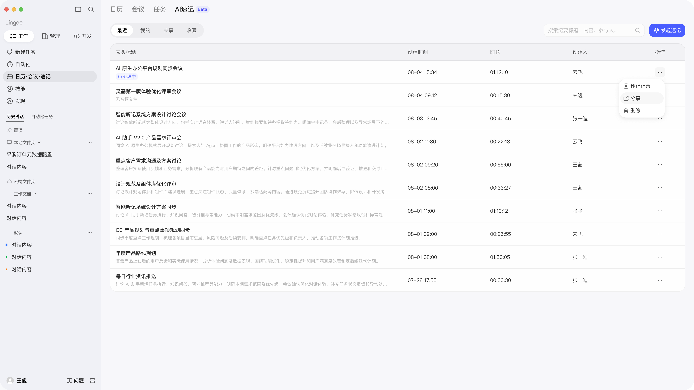
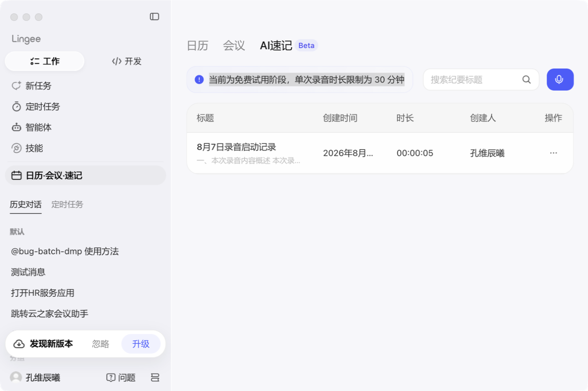
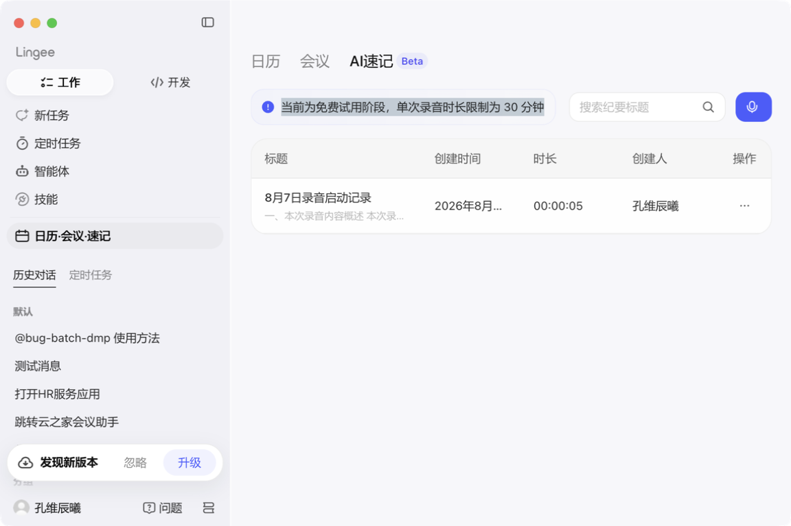
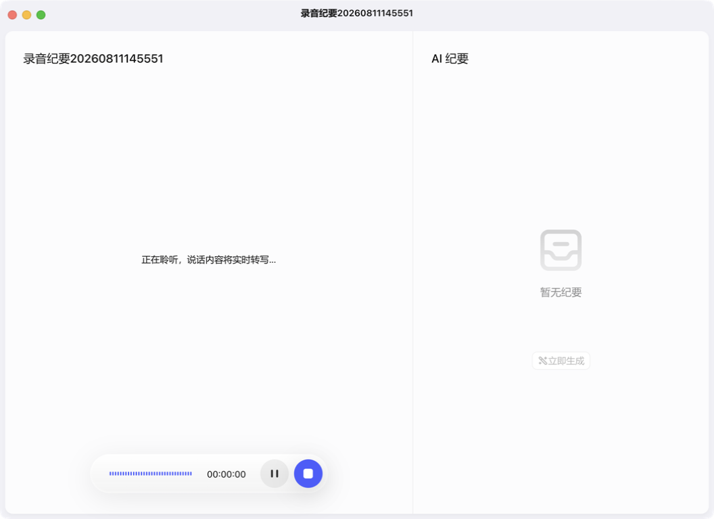
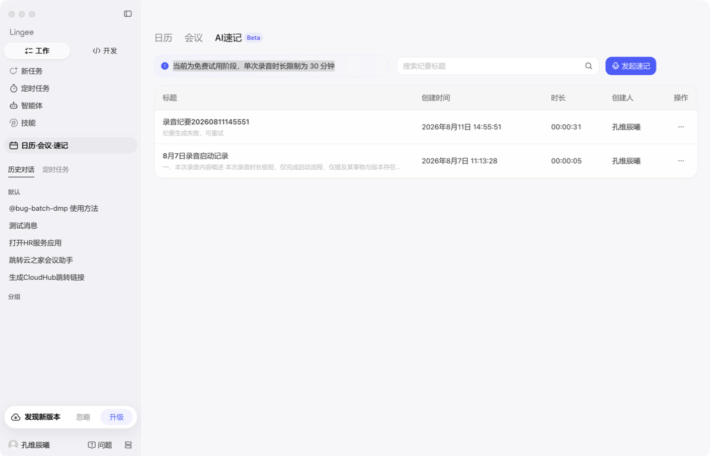

金蝶灵基 — AI速记 走查报告
金蝶灵基 — AI速记 走查报告
AI速记业务走查
覆盖代码扫描、界面交互、Figma 设计还原三个维度

综合评分
58
C · 合格
共发现 16 个界面问题（5 严重 / 6 中等 / 5 轻微），列表筛选 Tab 缺失、发起按钮缺失等功能完整性问题突出。Token 覆盖率 87.8%，设计还原发现 7 处差异。
5 严重
6 中等
5 轻微
3 未覆盖维度
颜色 Token 覆盖 L1
88
设计还原度 L1
55
界面完整性 L1
45
圆角规范 L2
65
字号规范 L2
63
响应式布局 L2
未覆盖
暗黑模式 L2
未覆盖
无障碍 L3
未覆盖
16
发现问题
479
硬编码 hex 色值
D 级
69
硬编码 rgba 色值
65
圆角偏差
63
字号偏差
3,965
Token 引用
所有问题（按严重程度排序）
#1
严重
列表筛选 Tabs 缺失
Figma 设计有
最近 / 我的 / 共享 / 收藏 四个筛选 Tab，实际页面完全缺失。用户无法按维度筛选速记列表，影响功能完整性。
#2
严重
列表页「发起速记」按钮缺失
Figma 设计中搜索栏右侧有蓝色「发起速记」按钮（带麦克风图标），实际列表页未显示该按钮。用户必须通过录音窗口入口才能发起速记，入口不直观。
注：录音中页面存在此按钮，但列表页作为主入口缺失影响较大。
注：录音中页面存在此按钮，但列表页作为主入口缺失影响较大。
#3
严重
搜索框 placeholder 文案不完整
Figma:
实际:
缺失了"内容、参与人"的搜索提示，用户可能不知道支持这些维度的搜索。
搜索纪要标题、内容、参与人...实际:
搜索纪要标题缺失了"内容、参与人"的搜索提示，用户可能不知道支持这些维度的搜索。
#4
严重
voiceRecord/window.css 硬编码色值 371 处
voiceRecord/window.css（248KB）包含 371 个硬编码 hex 色值和 8 个 rgba 色值。大量使用 #007aff、#2f2f2f、#be3896 等非 Token 值，未使用 var(--yui-*) 变量，影响主题切换和维护性。
#5
严重
QuickNotesPage.css 硬编码色值 159 处
QuickNotesPage.BCCz-dVs.css（90KB）包含 101 个 hex + 58 个 rgba 硬编码色值。典型问题值：#007aff、#3395ff、#3d0e0b、rgba(255,255,255,.08)。
#6
中等
最小窗口下按钮文字被截断
窗口缩至约 800×600 时，「发起速记」按钮仅显示麦克风图标，文字完全消失。用户难以识别按钮功能。建议设置 min-width 或在图标旁保留首字。
#7
中等
最小窗口下列表字段截断
创建时间列显示为
2026年8月...，日期信息不完整。建议使用更紧凑的日期格式（如 08-07 15:34），与 Figma 设计一致。
#8
中等
顶部试用提示文案有选中高亮残留
多张截图中「当前为免费试用阶段，单次录音时长限制为 30 分钟」文案出现灰色选中态，疑似
user-select: none 未设置或初始化时文本被意外选中。
#9
中等
搜索框点击后缺少聚焦反馈
设计规范：输入框聚焦时应有主色描边
#495DFF。实际点击搜索框后无明显光标或高亮边框，用户无法判断是否已进入输入状态。
#10
中等
「发起速记」无二次确认，直接开始录音
点击后立即打开录音窗口并开始录音，无确认弹窗。用户误触可能造成非预期录音。建议增加确认步骤或 toast 提示。
#11
中等
voiceRecord/window.css 圆角偏差 27 处
非标准值：
3px（规范无此值）、9px（应为 8px）、9999px（应为 999 Token）。标准 Token 匹配 310 处，偏差率约 8%。
#12
轻微
空状态图标与 Figma 不一致
Figma 空状态使用灰色折角文档图标 + 文字「暂无速记文件」，实际显示「未找到相关速记文件」（搜索结果空状态）。空列表的初始空状态未触发验证。
#13
轻微
列表滚动反馈不明显
列表内容较少时尝试滚动无视觉反馈。虽非缺陷，但可考虑在列表不可滚动时隐藏滚动区域或禁用滚动行为。
#14
轻微
QuickNotesPage.css 字号偏差 37 处
非标准值：
10px（规范最小 12px）、13px（不在 p1-p4 体系中）、15px、18px。建议使用 Token 变量 --yui-text-*。
#15
轻微
voiceRecord/window.css 字号偏差 26 处
非标准值：
11px、15px、22px、30px。标准 Token 匹配 367 处。
#16
轻微
未发现筛选器入口
如果产品预期有按状态/创建人等维度的筛选能力，当前页面未看到筛选入口。Figma 设计中也未包含独立筛选器组件。
AI速记模块代码扫描结果
📊 查看全量 Token 扫描数据 →文件级统计
| 文件 | 大小 | Token 引用 | 硬编码 hex | 硬编码 rgba | 圆角偏差 | 字号偏差 |
|---|---|---|---|---|---|---|
voiceRecord/window.css |
248 KB | 2,684 | 371 | 8 | 27 | 26 |
voiceRecord/window.js |
601 KB | 9 | 7 | 3 | 0 | 0 |
QuickNotesPage.css |
90 KB | 1,269 | 101 | 58 | 38 | 37 |
QuickNotesPage.js |
49 KB | 3 | 0 | 0 | 0 | 0 |
| 合计 | 988 KB | 3,965 | 479 | 69 | 65 | 63 |
硬编码色值 Top 10（voiceRecord/window.css）
#007aff
#2f2f2f
#be3896
#3336d6
#3395ff
#d8eeff
#bcd8ff
#fa3
JS 中的硬编码色值（voiceRecord/window.js）
| 色值 | 可能用途 | 建议替换 |
|---|---|---|
#007aff | iOS 蓝 | var(--yui-blue-700) |
#078E3B | 成功绿 | var(--yui-green-500) |
#E26735 | 警告橙 | var(--yui-orange-500) |
#F12234 | 危险红 | var(--yui-red-500) |
#2970FF | 蓝色 | var(--yui-blue-500) |
圆角偏差 — 选择器级定位
以下是需要修复的具体选择器，可直接定位到源码修改。
QuickNotesPage.css — 3 处
| CSS Module 类名 | 实际值 | 建议 Token | 组件推测 |
|---|---|---|---|
._pendingPreview_62mt9_2411 |
5px | small (4px) 或 medium (6px) | 待预览状态卡片 |
._speakerButton_62mt9_2450 |
5px | small (4px) 或 medium (6px) | 说话人按钮 |
._uploadingPreview_62mt9_2770 |
5px | small (4px) 或 medium (6px) | 上传中预览卡片 |
voiceRecord/window.css — 5 处
| 选择器 | 实际值 | 建议 Token | 说明 |
|---|---|---|---|
::-webkit-scrollbar-thumb |
9px | x-medium (8px) | 滚动条滑块 |
.g-icon-*-group:before |
2px | small (4px) | 图标组前缀元素 |
.rounded-[10px] |
10px | x-medium (8px) | Tailwind arbitrary value，源码改 rounded-lg |
.rounded-[2px] |
2px | small (4px) | Tailwind arbitrary value，源码改 rounded |
.rounded-[3px] |
3px | small (4px) | Tailwind arbitrary value，源码改 rounded |
.rounded-full (9999px) 和 .!rounded-full (9999px) 为 Tailwind 标准工具类，无需修改。
字号偏差 — 选择器级定位
实际只有 5 处偏差（之前统计的 63 处包含了规范声明本身的数值）。
voiceRecord/window.css — 4 处
| 选择器 | 实际值 | 建议 | 源码修改方式 |
|---|---|---|---|
h2 |
30px | 36px (h2) | 全局 h2 标签样式，检查是否有意为之 |
.text-[11px] |
11px | 10px (p4) 或 12px (p3) | 源码 className="text-[11px]" → 改 text-xs |
.text-[15px] |
15px | 14px (p2) 或 16px (p1) | 源码 className="text-[15px]" → 改 text-sm |
.text-[22px] |
22px | 20px (h3) 或 24px (h2) | 源码 className="text-[22px]" → 改 text-xl |
QuickNotesPage.css — 1 处
| CSS Module 类名 | 实际值 | 建议 | 组件推测 |
|---|---|---|---|
._dropzoneTitle_62mt9_2365 |
15px | 14px (p2) | 拖拽上传区域的标题文字 |
Figma 设计稿 vs 实际实现
列表页整体布局

Figma 设计稿

实际实现
| 差异项 | Figma 设计 | 实际实现 | 严重度 |
|---|---|---|---|
| 筛选 Tabs | 最近 / 我的 / 共享 / 收藏 | 缺失 | 严重 |
| 发起速记按钮 | 蓝色按钮 + 麦克风图标 | 缺失 | 严重 |
| 搜索框 placeholder | 搜索纪要标题、内容、参与人... | 搜索纪要标题 | 严重 |
| 试用提示 Banner | 无 | 有（免费试用阶段...） | 运营 |
| 数据量 | 10 行示例数据 | 1 行实际数据 | 数据 |
空状态对比

Figma 空状态
实际搜索无结果
| 差异项 | Figma 设计 | 实际实现 |
|---|---|---|
| 空状态文案 | 「暂无速记文件」 | 「未找到相关速记文件」（搜索空状态） |
| 图标 | 灰色折角文档图标 | 类似图标，尺寸偏大 |
响应式（最小窗口 ~800px）

最大窗口

最小窗口 (~800px)
| 问题 | 描述 | 严重度 |
|---|---|---|
| 按钮文字消失 | 「发起速记」仅显示图标 | 中等 |
| 日期截断 | 创建时间显示不全 | 中等 |
交互状态

搜索框聚焦

发起录音（录音窗口）
| 问题 | 设计规范 | 实际表现 |
|---|---|---|
| 搜索框聚焦 | 主色描边 #495DFF | 无明显聚焦反馈 |
| 发起速记 | - | 无二次确认，直接开始录音 |
快速切换测试

快速在日历 → 会议 → AI速记之间切换，未发现面板残留或内容错位。通过
待验证项
P1
待验证
列表初始空状态
当前列表有 1 条数据，无法验证 0 条数据时的空状态展示。Figma 设计有「暂无速记文件」空状态，需人工在无数据账号下验证。
P2
待验证
纪要详情页
Figma 有纪要详情页设计（含音频播放器），当前仅有 1 条 5 秒录音记录，未能充分验证详情页的完整展示。建议在有完整录音记录时重新走查。
P3
待验证
暗黑模式适配
本次走查在亮色模式下进行。需切换暗黑模式后重新截图对比，检查硬编码色值在深色背景下的表现。
P4
待验证
键盘导航与无障碍
Tab 键导航顺序、focus ring 可见性、aria-label 完整性未在本次走查中验证。需要人工逐项检查。
P5
待验证
录音中窗口最小化
Figma 有「录音中最小化」设计（node 220:31020），本次未测试录音进行中窗口最小化的表现。